Welcome to God's Own Country - Kerala
Hill Stations
Munnar
- Tea Gardens
- Eravikulam National Park
- Mattupetty Dam
- Anamudi Peak
- Attukal Waterfalls
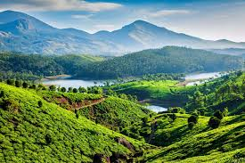
Wayanad
- Edakkal Caves
- Banasura Sagar Dam
- Soochipara Waterfalls
- Chembra Peak
- Thirunelli Temple
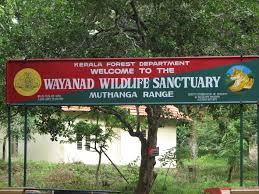
Vagamon
- Vagamon Pine Forests
- Kurisumala Ashram
- Vagamon Meadows
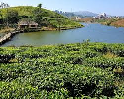
Backwaters and Houseboats
Alappuzha (Alleppey)
- Backwater cruises
- Alappuzha Beach
- Punnamada Lake
- Krishnapuram Palace
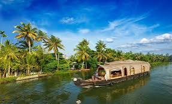
Kumarakom
- Vembanad Lake
- Kumarakom Bird Sanctuary
- Aruvikkuzhi Waterfalls
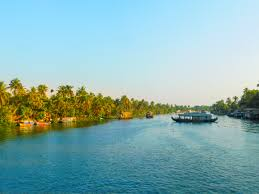
Kollam (Quilon)
- Ashtamudi Lake
- Munroe Island
- Thangassery Beach

Beaches
Kovalam
- Lighthouse Beach
- Hawa Beach
- Samudra Beach
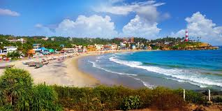
Varkala
- Varkala Beach
- Janardanaswamy Temple
- Sivagiri Mutt
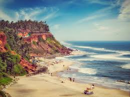
Kozhikode (Calicut)
- Kozhikode Beach
- Beypore Beach
- Kappad Beach
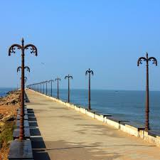
Cultural and Heritage Sites
Fort Kochi
- St. Francis Church
- Fort Kochi Beach
- Chinese Fishing Nets
- Mattancherry Palace (Dutch Palace)

Thrissur
- Vadakkunnathan Temple
- Thrissur Pooram
- Athirappilly Waterfalls
- Guruvayur Temple

Wildlife and Nature Reserves
Periyar National Park and Wildlife Sanctuary
- Wildlife safaris
- Periyar Lake
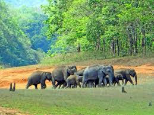
Silent Valley National Park

Wayanad Wildlife Sanctuary
- Muthanga and Tholpetty Wildlife Reserves
Historical and Religious Sites
Thiruvananthapuram (Trivandrum)
- Padmanabhaswamy Temple
- Napier Museum
- Kuthira Malika (Palace of the Travancore Maharaja)
- Kovalam Art Gallery
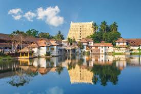
Guruvayur
- Guruvayur Temple
- Elephant Camp (Punnathur Kotta)
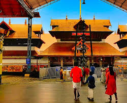
Other Notable Attractions
Palakkad
- Palakkad Fort
- Malampuzha Dam and Gardens
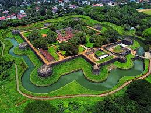
Malappuram
- Kadalundi Bird Sanctuary
- Kottakkunnu
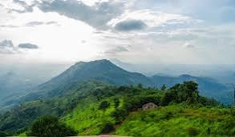
Kasargod
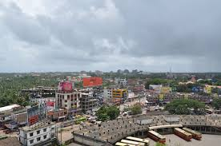
Kannur
- St. Angelo Fort
- Muzhappilangad Beach (longest drive-in beach in India)
Thrissur
- Athirappilly and Vazhachal Waterfalls

Ponmudi
- Hill station near Thiruvananthapuram
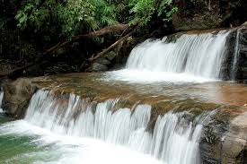
Cherai Beach
- Near Kochi, popular for water sports and seafood
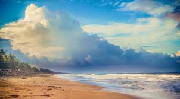
Ayurvedic Retreats and Wellness Centers
Kovalam
- Ayurvedic treatments and massages

Palakkad
Kottakkal
- Kottakkal Arya Vaidya Sala
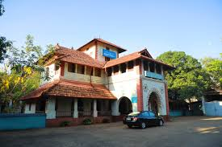
Festivals and Events
Thrissur Pooram
- Grand temple festival in Thrissur
Onam
- Harvest festival celebrated statewide
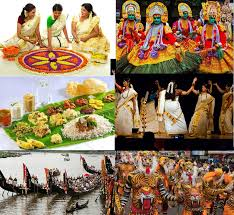
Nehru Trophy Boat Race
- Alappuzha's famous snake boat race
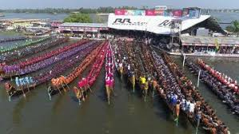
Eco-Tourism Destinations
Thenmala
- India's first planned eco-tourism destination
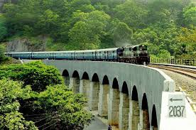
Muziris Heritage Project
- Archaeological and heritage sites around Kochi
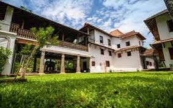
Adventure and Trekking
Agasthyakoodam
- Trekking in the Western Ghats
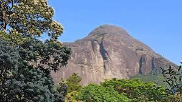
Chembra Peak
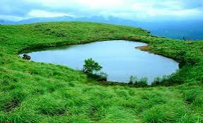